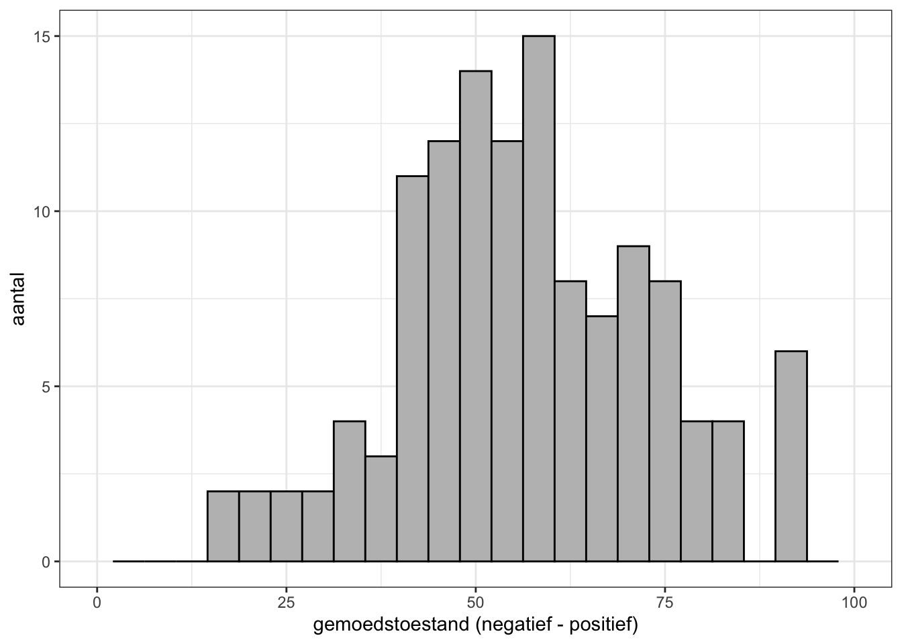

We zijn tot nu bezig geweest met allerlei zaken die komen kijken bij statistisch onderzoek. Je zou bijna vergeten waarom we dit doen: we willen leren over hoe de wereld in elkaar zit en onze onderzoeksvragen beantwoorden! Vanaf nu gaan we daarom meer praktisch aan de slag. We gaan kijken hoe we diverse relaties tussen dingen kunnen onderzoeken en of we daar wat zinnigs over kunnen zeggen. Overigens hebben we naast de technische aspecten van statistisch onderzoek ook inhoudelijk rondom drugs en uitgaan al aardig wat geleerd. Zo hebben we een schatting gemaakt van het xtc- en alcoholgebruik in de uitgaanderspopulatie, en hebben we onderzocht wat de gemiddelde verschillen zijn in alcoholconsumptie tussen mannen en vrouwen.
Onder Hypothese toetsen hebben we onderzocht wat het verschil is tussen twee groepen (mannen en vrouwen) op een numerieke hoeveelheid (aantal glazen alcohol). Daarbij nemen we een nominale variabele1 om de groepen te bepalen en een kwantitatieve variabele om hun gemiddeldes op te vergelijken. Dit noemen we een t-toets voor onafhankelijke groepen.
1 Dit kan in principe ook met een ordinale variabele, zolang je maar twee waardes (lees: groepen) selecteert.
2 De terminologie rondom t-toetsen kan wat verwarrend zijn, omdat beide type t-toetsen het over ‘groepen’ hebben. Belangrijk om te onthouden is dat we bij ‘onafhankelijke groepen’ in principe tussen twee groepen vergelijken (zoals we het woord groepen normaliter gebruiken) en bij ‘afhankelijke groepen’ in principe binnen één groep vergelijken.
In dit hoofdstuk gaan we naar een andere t-toets kijken: de t-toets voor afhankelijke groepen. Deze toets gebruiken we om een net iets ander type vraag te beantwoorden: wat is het verschil in het gemiddelde op twee kwantitatieve variabelen binnen één groep. Die groep kan bijvoorbeeld de populatie uitgaanders zijn als geheel, of alleen mannen of vrouwen. In plaats van één nominale variabele en één kwantitatieve variabele zoals bij de t-toets voor onafhankelijke groepen, staan bij de t-toets voor afhankelijke groepen twee kwantitatieve variabelen centraal in de analyse.2
We gaan de t-toets voor afhankelijke groepen uitwerken met een voorbeeld. Volgens traditie doen we dit eerst handmatig en daarna computermatig om inzicht te krijgen in het proces. Na alle voorgaande hoofdstukken kunnen we natuurlijk niet anders dan een betrouwbaarheidsinterval te berekenen.
12.1 Beetje pips van de dips
Onder feestgangers is het een bekend verschijnsel: de dinsdagdip. Na een weekend feesten met uitbundig 🥳 of excessief😬 drugsgebruik voelen gebruikers zich vaak de dinsdag erna bijzonder matig. Dit uit zich in klachten als somberheid, vermoeidheid, en slecht concentratievermogen.3 Drugs hebben echter verschillende effecten op gebruikers, wat impliceert dat de dinsdagdip voor de ene drug zwaarder kan aankomen dan voor de andere drug.
3 3-MMC is een zogenoemde designerdrug die de laatste jaren populair is geworden onder uitgaande jongeren. Voor meer informatie: Trimbos.
4 3-MMC is een zogenoemde designerdrug die de laatste jaren populair is geworden onder uitgaande jongeren. Voor meer informatie: Trimbos.
5 De \(_d\) komt uit het Engels en staat voor difference.
In dit voorbeeld gaan we kijken of uitgaanders een verschil in dinsdagdip ervaren voor xtc en 3-mmc.4 We nemen daarbij de hele populatie van uitgaanders als startpunt. Aangezien we uitgaanders willen vergelijken die zowel xtc als 3-mmc hebben gebruikt, beperken we onze populatie tot deze specifieke groep gebruikers. De variabele gemoed_dinsdag_na_xtc hebben we al eerder gezien Histogram.5 We gebruiken voor 3-mmc een zelfde soort variabele: gemoed_dinsdag_na_mmc. Laten net als bij de histogram van gemoed_dinsdag_na_xtc een histogram maken voor gemoed_dinsdag_na_mmc.
# histogram van gemoedstoestand op dinsdag na 3-mmc gebruikggplot(data_uitgaan, aes(x = gemoed_dinsdag_na_mmc)) +geom_histogram(bins =25, fill ="grey", colour ="black") +theme_bw() +ylab("aantal") +xlab ("gemoedstoestand (negatief - positief)") +xlim(0, 100)

Je ziet dat de variabele redelijk normaal verdeeld lijkt. De meeste waarden bevinden zich tussen de 40 en 80.
12.1.1 Hypothese opstellen
Voor aanvang willen we specificeren wat we gaan toetsen. We zijn hier geïnteresseerd in de gemiddelde verschilscore tussen gemoed_dinsdag_na_xtc en gemoed_dinsdag_na_mmc. We hebben geen verwachting over de richting van het gemiddelde, of het positief of negatief is. Daarom kunnen we de nulhypothese als volgt formuleren:
H0: Het gemiddelde verschil tussen gemoedstoestand op dinsdag na xtc- en 3-mmc-gebruik voor uitgaanders is nul.
Notatie: \(\mu_d=0\)
Deze notatie hierboven is nieuw. \(\mu_d\) staat voor het populatiegemiddelde van de verschilscore.6
6 De d komt uit het Engels en staat voor difference.
12.1.2 Handmatige berekening
Eerst even wat uitleg over die verschilscore. Wat je vergelijkt bij een t-toets voor afhankelijke groepen is iets anders dan bij een t-toets voor onafhankelijke groepen. Bij de laatste bereken je eerst het gemiddelde op een variabele voor beide groepen, en vervolgens vergelijk je die twee gemiddeldes met elkaar. Je schat daarmee twee populatieparameters (twee gemiddeldes).
Bij t-toets voor afhankelijke groepen neem je eerst de verschilscore tussen de variabelen voor alle observaties en daar bereken je in principe het gemiddelde van. Hier schat je dan maar één populatieparameter.
NoteUitleg over berekening verschilscore
Neem bijvoorbeeld twee respondenten.
Respondent A scoort 80 op gemoed_dinsdag_na_xtc en 65 op gemoed_dinsdag_na_mmc. De verschilscore is dan \(80-65=15\).
Respondent B scoort 70 op gemoed_dinsdag_na_xtc en 75 op gemoed_dinsdag_na_mmc. De verschilscore is dan \(70-75=-5\).
Deze verschilscores tel je dan bij elkaar op, waarna je het gemiddelde berekent.
Voor de berekening van het betrouwbaarheidsinterval is dit de formule bij deze t-toets:
\[
\bar{d} \pm t_k \frac{s_d}{\sqrt{n}}
\]
We gebruiken hier \(\bar{d}\) om aan te geven dat het om het gemiddelde van de verschilscores gaat. \(s_d\) staat voor de standaardeviatie van die verschilscores. Dat maakt \(s_d/\sqrt{n}\) de standaardfout en \(t_k\) de kritieke grenswaarde.
We hebben als eerste die verschilscores nodig. Die kunnen we makkelijk krijgen door een nieuwe variabele verschil_xtc_mmc aan te maken waarvoor we gemoed_dinsdag_na_xtc minus gemoed_dinsdag_na_mmc doen. We vragen ook meteen de beschrijvende statistieken op.
Min. 1st Qu. Median Mean 3rd Qu. Max. NA's
-48.000 -12.500 0.000 1.244 17.750 42.000 268
sd(data_uitgaan$verschil_xtc_mmc, na.rm =TRUE)
[1] 20.91993
valid.n(data_uitgaan$verschil_xtc_mmc) # aantal valide waarden
[1] 82
Deze statistieken geven al wat inzicht in verschil_xtc_mmc. Het gemiddelde is 1,2, wat niet heel groot is gezien dat het bereik op originele variabelen 0-100 is. De standaardeviatie is verder vrij groot (20,9) en het minimum (-48) en maximum (42) liggen ver uit elkaar. Verder hebben 82 respondenten een valide waarde op deze variabele. Dat betekent dat van de 350 respondenten in totaal van data_uitgaan er 82 zowel ooit xtc als 3-mmc hebben gebruikt.
We kunnen nu statistieken invullen in de formule. We moeten alleen nog de \(t_k\) weten. Het aan vrijheidsgraden bij deze toets is \(df=n-1=82-1=81\) . De t-tabel toont dat \(t_k=1,990\). Nu kunnen we via de bekende weg alles uitrekenen met behulp van R.
# gedeelte achter +-1.990*20.920/sqrt(82)
[1] 4.597353
# 95%-bhi berekenen1.244-4.597
[1] -3.353
1.244+4.597
[1] 5.841
Het bhi is dus \([-3,35, 5,84]\).
12.1.3 Computerberekening
Met een paar regels code kunnen we dit resultaat ook krijgen met t.test().
# t-toets uitvoeren voor afhankelijke groepent.test(data_uitgaan$gemoed_dinsdag_na_xtc, # eerste variabele data_uitgaan$gemoed_dinsdag_na_mmc, # tweede variabelepaired =TRUE)
Paired t-test
data: data_uitgaan$gemoed_dinsdag_na_xtc and data_uitgaan$gemoed_dinsdag_na_mmc
t = 0.53843, df = 81, p-value = 0.5918
alternative hypothesis: true mean difference is not equal to 0
95 percent confidence interval:
-3.352710 5.840515
sample estimates:
mean difference
1.243902
12.1.4 Interpretatie en conclusie
We laten onze befaamde interpretatie los op de uitkomst:
We kunnen met 95% betrouwbaarheid stellen dat het gemiddelde verschil tussen gemoedstoestand op dinsdag na xtc- en 3-mmc-gebruik tussen de -3,35 en 5,84 ligt, gebaseerd op (hypothetische) herhaalde steekproeven en geen additionele relevante kennis.
We vinden dus dat de gemiddelde verschilscore zowel negatief (-3,35) als positief (5,84) zou kunnen zijn. De potentiële populatieparameters zijn an sich niet heel groot; een verschil van 5 op een oorspronkelijk bereik van 0-100 stelt niet veel voor. De populatieparameters lijken zich vooral rondom nul te begeven.
Omdat nul ook binnen het bhi valt, concluderen we dat we de nulhypothese niet verwerpen.7 Er lijkt dus geen wezenlijk verschil te zijn tussen de gemoedstoestand op dinsdag na het gebruik van xtc of 3-mmc. We kunnen er, bij gebrek aan ander bewijs, vanuit gaan dat de drugs een vergelijkbare kater geven.
7 Je kunt ook zien dat de p-waarde (0,59) veel hoger is dan het significantieniveau (0,05).
12.2 Samenvatting
We hebben in dit hoofdstuk een t-toets voor afhankelijke groepen uitgevoerd door de gemoedstoestand op dinsdag van drugsgebruikers te vergelijken m.b.t. xtc en 3-mmc. Bij deze t-toets vergelijken we voor één groep de scores op twee kwantitatieve variabelen. Bij een t-toets voor onafhankelijke groepen vergelijken we juist twee groepen op één variabele. Het hoofdstuk toont verder dat we eerder geleerd hebben rondom betrouwbaarheidsintervallen hier ook goed toepasbaar is, ditmaal voor een gemiddelde verschilscore 🤓.